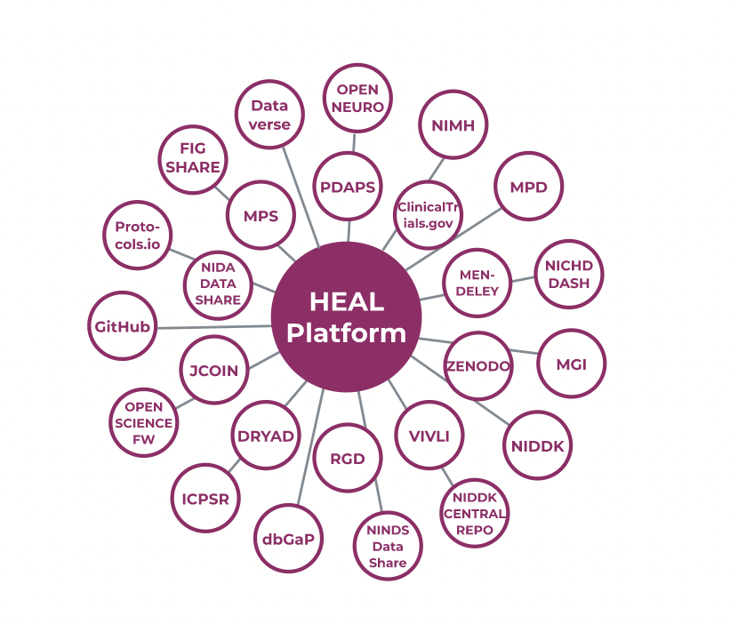
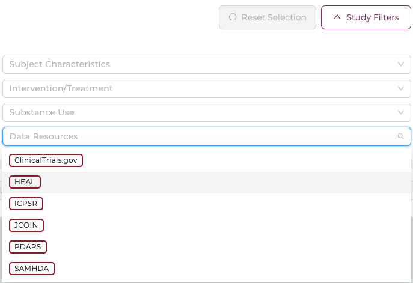

Data Management and Repositories¶
As part of the NIH HEAL Initiative, the HEAL Platform securely exposes data stored on multiple HEAL-approved FAIR repositories, i.e. data libraries or archives. Thus, the aim of the platform is to provide an easy way to connect different repositories on one single location.
FAIR data repositories are traditionally a part of a larger institution established for research, data archiving, and, to serve data users of that organization.
For more information from NIH, see https://heal.nih.gov/about/public-access-data.
Currently, the HEAL platform makes data available from the following FAIR Data Resources or Repositories:

Studies from different Data Resources can be filtered and selected on the Discovery Page in the Study Characteristics section (top panel):

In the following, we list a short summary of datasets shared from each repository.
HEAL¶
At this time, the HEAL Platform shares metadata of 565 studies from https://heal.nih.gov/funding/awarded (status Feb 2021) under the general tag "HEAL". As more data become available to the public, the metadata and datasets will be distributed to different FAIR repositories.
Clinical Trials¶
ClinicalTrials.gov is a Web-based resource that provides patients, their family members, health care professionals, researchers, and the public with easy access to information on publicly and privately supported clinical studies on a wide range of diseases and conditions. For more information, please click here.
Currently, the HEAL platform shares 25 studies from the Clinical Trials repository.
- Innovatively Increasing PCP Prescribing of Buprenorphine: Measurement Based Care and Integrated Electronic Solution
- Feasibility of Deep Brain Stimulation as a Novel Treatment for Refractory Opioid Use Disorder
- mHealth for Patient Self-Management of Opioid Use Disorder
- Optimal Treatment of Veterans With PTSD and Comorbid OUD
- Biased Opioid Agonists for Treatment of Opioid Withdrawal in OUD
- Opioid Use Disorder Treatment Linkage at Sexual Health Clinics Using Buprenorphine
- Coordinating Opioid Use Treatment Through Medical Management With Infection Treatment (Project COMMIT)
- Preventing OUD in Justice-Involved Youth
- FNOS in HIV Subjects
- Clinical Decision Support to Implement ED-initiated Buprenorphine for OUD
- Cognitive Function and Pain Threshold in People Who Are Methadone Maintained
- SafetyNet Program for Opioid Use Disorder (OUD)
- Computerized Chemosensory-Based Orbitofrontal Cortex (CBOT) for Opioid Use Disorder
- Clinical Decision Support for Opioid Use Disorders in Medical Settings (COMPUTE 2.0)
- Treatment of Restless Legs Symptoms With Pramipexole to Improve the Outcomes of Protracted Opioid Withdrawal in OUD
- Quantitative Sensory Psychophysical Correlates of Pain in Pregnant Women With OUD
- The Whole Health Study: Collaborative Care for OUD and Mental Health Conditions
- Clinical Decision Support for Opioid Use Disorders in Medical Settings: Usability Testing in an EMR
- CoMBAT Opioid Use Disorder
- A Brief Negotiation Interview Chatbot to Improve Buprenorphine Engagement Among Justice-Involved Individuals
- PRimary Care Opioid Use Disorders Treatment (PROUD) Trial
- Exablate for LIFU Neuromodulation in Patients With Opioid Use Disorder (OUD)
- Treatment of Pregnant Women With OUD
- Suicide Prediction and Prevention for People at Risk for Opioid Use Disorder: Supplement to COMPUTE 2.0
- Prevention of OUD: The HOME Project (Housing, Opportunities, Motivation and Engagement)
Inter-university Consortium for Political and Social Research (ICPSR)¶
ICPSR is a data repository that in itself is an international consortium of more than 750 academic institutions and research organizations. ICPSR maintains a data archive of more than 250,000 files of research, and hosts many specialized collections. For more information, please click here.
Currently, the HEAL platform shares 8 studies from the ICPSR repository.
- National Mental Health Services Survey (N-MHSS), 2010. N-MHSS is the only source of national- and state-level data on the mental health services delivery system reported by both publicly and privately operated specialty mental health treatment facilities.
- National Survey of Substance Abuse Treatment Services (N-SSATS), 2004. N-SSATS is an annual census of public and private substance use treatment facilities.
- Treatment Episode Data Set -- Discharges (TEDS-D) -- Concatenated, 2006 to 2011. Recorded discharges during substance abuse treatment.
- Monitoring the Future: A Continuing Study of American Youth (12th-Grade Survey), 2019
- Monitoring the Future: A Continuing Study of American Youth (8th- and 10th-Grade Surveys), 2019
- Army Study to Assess Risk and Resilience in Servicemembers (STARRS)
- Michigan Automated Prescription System (MAPS), January 2014-March 2021
- Michigan Automated Prescription System (MAPS), May 2020 Data
Justice Community Opioid Innovation Network (JCOIN)¶
The NIH HEAL Initiative will support the Justice Community Opioid Innovation Network (JCOIN) to study approaches to increase high-quality care for people with opioid misuse and Opioid Use Disorder in justice settings. JCOIN will test strategies to expand effective treatment and care in partnership with local and state justice systems and community-based treatment providers. For more information, please click here.
Currently, the HEAL platform shares 2 studies from the JCOIN repository.
- Methodology and Advanced Analytics Resource Center - AmeriSpeak Opioid Stigma Surveys. Repeated cross-sectional survey tracking stigma and public attitudes towards opioid use disorder over time in a nationally representative sample.
- Methodology and Advanced Analytics Resource Center - The Opioid Environment Policy Scan. The Opioid Environment Policy Scan provides access to data at multiple spatial scales to help characterize the multi-dimensional risk environment impacting opioid use in justice populations across the United States.
Prescription Drug Abuse Policy System (PDAPS)¶
PDAPS was created with funding from the National Institute on Drug Abuse to track key state laws related to prescription drug abuse. PDAPS is a source of rigorous legal data for researchers and detailed policy information for the public. For more information, please click here.
Currently, the HEAL platform shares 1 study from the Prescription Drug Abuse Policy System (PDAPS) repository.
- Naloxone Overdose Prevention Laws. Tracking key state laws related to prescription drug abuse.